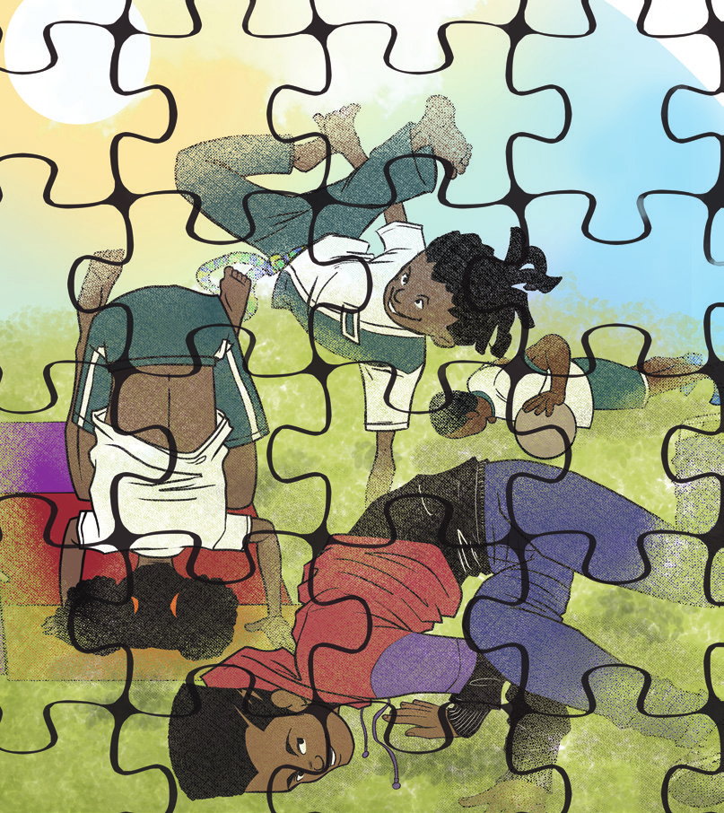
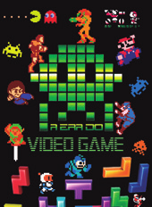

Orientações específicas
e atividades propostas
6.º ano

Sérgio Bonfim dos Santos
EDUCAÇÃO FÍSICA 17
BRINCADEIRAS E JOGOS
Iniciando a busca
Ao trabalhar com essa unidade temática, espera-se que os alunos desenvolvam as seguintes habilidades e competências:
• (EF67EF01) Experimentar e fruir, na escola e fora dela, jogos eletrônicos diversos, valorizando e respeitando os sentidos e significados atribuídos a eles por diferentes grupos sociais e etários.
• (EF67EF02) Identificar as transformações nas características dos jogos eletrônicos em função dos avanços das tecnologias e nas respectivas exigências corporais colocadas por esses diferentes tipos de jogos.
• Competências específicas: 3, 8 e 10
• Competências gerais: 5
• Competências linguagem: 1, 2 , 3, 4, 6
De acordo com a BNCC,
A unidade temática Brincadeiras e jogos explora aquelas atividades vo-luntárias exercidas dentro de determinados limites de tempo e espaço, caracterizadas pela criação e alteração de regras, pela obediência de cada participante ao que foi combinado coletivamente, bem como pela apreciação do ato de brincar em si. (2017, p. 212).
Nessa temática, a BNCC insere como objeto de conhecimento os jogos eletrônicos. O ambiente virtual está cada vez mais presente na vida do ser humano com o uso de video games, computadores e celulares. Buscando o desenvolvimento do aluno, a escola pode e deve fazer uso dessas tecnologias disponíveis, e os jogos eletrônicos são uma ferramentas muito úteis nas aulas de Educação Física, pois proporcionam novas práticas.
Corpo em ação
Jogos eletrônicos
Os jogos eletrônicos apresentados neste material buscam a compreensão dos alunos para que eles percebam os avanços das tecnologias e das respectivas exigências corporais colocadas por esses diferentes tipos de jogos. Os games estilo Fifa Soccer, por exemplo, são os mais tradicionais, pois os comandos ainda dependem do joystick e requerem uma postura sentada do jogador. Já os games semelhantes ao Just Dance exigem que os comandos sejam dados por meio de um acessório semelhante a um tapete que, ligado a uma TV, gera os movimentos, exigindo participação
EDUCAÇÃO FÍSICA18
ativa do jogador, que precisa estar em pé. Os jogos mais modernos são acompanhados de sensores que captam cada movimento dos jogadores. A evolução dosvideo games permitiu muitas mudanças, não só na forma de jogar como também nos gráficos apresentados em cada jogo.
Inicie a aula perguntando aos alunos o que eles conhecem sobre jogos eletrônicos e por que essa temática é abordada em Educação Física. Deixe que falem o que sabem e pergunte sobre alguns termos que estão presentes no universo de jogos eletrônicos e proponha uma pesquisa para defini-los. Termos que poderão surgir: video games; gamer; ciberatletas; e-sports; exergames. Após, inicie um diálogo sobre esses termos.
Fifa Soccer
Fifa Soccer é uma série de jogos, lançada anualmente, que inclui jogadores do mundo todo. Tem uma jogabilidade muito boa, sendo fiel aos comandos de quem está com a posse do joystick. Atualmente, o jogo possui várias ligas do mundo em seu conteúdo, inclusive ligas de futebol feminino. O jogo é atualizado, a cada ano, com materiais diferentes e principalmente com os astros do futebol no seu melhor momento. O intuito do jogo é fazer gol, o máximo que conseguir, durante o tempo regulamentar previamente definido.
Organizando a atividadeMateriais necessários: video game, televisor, papel, caneta e jogo Fifa Soccer.
Número de aulas estimado: 2
Objetivo: experimentar e fruir do jogo eletrônico dentro da escola, interagindo com os colegas e trocando experiências, bem como aprender a organizar um pequeno torneio de futebol.
Sugestão de FilmE
Clique para mostrar a sugestão
A Era do video game
Ano: 2007.
Produção: Discovery Channel.
A Era do video game é uma visão madura do impacto e da influência dos jogos na sociedade, levando a sério o assunto, mas sem perder o tom de brincadeira. Este documentário possui 5 capítulos: O polegar; O rosto; As pernas; A mente, e O coração. Nesses 5 capítulos, narra a trajetória dos jogos eletrônicos, desde o final da década de 50 até os dias atuais, retratando não apenas aspectos históricos, mas também o impacto e a influência dos games no mundo do entretenimento contemporâneo.

EDUCAÇÃO FÍSICA 19
Sugestão de LeiturA
Clique para mostrar a sugestão
Exergames: jogos eletrônicos e exercícios?
Talita da Silva de Assis e Alfred Sholl-Franco
O artigo trata dos exergames, jogos que utilizam os movimentos corporais como forma de interação com ambientes virtuais, contribuindo para o aumento no repertório de movimentos dos alunos
Disponível em: https://cutt.ly/BHd7oya. Acesso em: 25 abr. 2022.
Os próprios alunos irão organizar um torneio com os colegas, seguindo algumas orientações para o bom funcionamento da atividade: definir o tempo de jogo; definir se o jogo pode acabar com determinado número de gols, mesmo que o tempo não tenha finalizado; definir o tipo de chave (cada um dos grupos de participantes que devem se enfrentar para se classificarem para a etapa posterior) a ser adotada; organizar chaves iguais aos grandes torneios; controlar e atualizar as chaves, uma vez que será realizada a fase classificatória, semifinal e final para conhecer o vencedor.
Just Dance
O Just Dance é um jogo eletrônico que consiste em executar a repetição de movimentos de dança em forma de coreografia, por meio de comandos sequenciais transmitidos pela tela da televisão ou pela luz que se acende no tapete. A possibilidade de escolher livremente a música a se dançar facilita muito, pois selecionar uma de fácil compreensão é sinônimo de boa pontuação, que, de acordo com o desenvolvimento da música e do sucesso na execução dos passes, é imediatamente recebida com a exposição na tela.
 Divulgação / Ubisoft Jogo Just Dance, 2015.
Divulgação / Ubisoft Jogo Just Dance, 2015.
 Divulgação / Ubisoft Jogo Just Dance, 2015.
Divulgação / Ubisoft Jogo Just Dance, 2015.
Organizando a atividade
Materiais necessários: video game, televisor, papel, caneta e jogo Just Dance.
Número de aulas estimado: 2
Objetivo: experimentar e fruir do jogo eletrônico dentro da escola, procurando aumentar a performance de movimentos corporais de dança.
Todos os alunos irão escolher uma música, com o mesmo grau de dificuldade para que ninguém seja prejudicado. Juntamente com a turma, organize uma tabela com o nome dos participantes, que terão três oportunidades de dançar músicas diferentes (uma um pouco mais lenta, uma mediana e outra rápida), porém, com o mesmo grau de dificuldade. Após cada dança executada, os alunos deverão anotar os valores finais atribuídos
EDUCAÇÃO FÍSICA 20
para as suas performances. Ao final, cada aluno deverá escolher uma das danças que executou e dançá-la novamente, tentando superar a pontuação anterior. Dessa forma, não haverá competição entre eles, e sim superação. De 2006 aos dias atuais houve vários lançamentos de games utilizando joysticks com sensores de movimento, o que revolucionou a forma de jogar, e sensores ligados ao próprio video game sem o uso de joysticks.
Jogo de movimento – com sensor
Para jogar esse game, é preciso mais do que simplesmente apertar alguns botões em um joystick preso ao console, o jogador deverá se levantar do sofá e experimentar a liberdade, aumentando sua interação com os games.
No jogo de tênis, por exemplo, o jogador segura o comando como se fosse uma raquete e balança-o de maneira a poder fazer todo o tipo de jogadas. Da mesma forma, nos demais jogos os jogadores irão imitar os movimentos utilizados em cada prática esportiva.
Ao término, organize uma roda de conversa sobre os games, o sedentarismo e sobre a ocupação do tempo livre dos adolescentes e jovens atualmente com games em detrimento das atividades corporais que exigem maior movimentação corporal, como esportes, danças, lutas e práticas de aventura.
Sugestão de LeiturA
Clique para mostrar a sugestão
Jogos eletrônicos:
uma possibilidade educativa nas aulas de Educação Física
Leila Pereira Fraga Rodrigues.
O projeto busca refletir sobre a inserção da tecnologia e suas linguagens nas aulas de Educação Física, por meio dos jogos eletrônicos (games).
Disponível em: https://cutt.ly/
DHd47c0. Acesso em: 26 abr. 2022.
EDUCAÇÃO FÍSICA 21
Sugestão de LeiturA
Clique para mostrar a sugestão
Educação Física Escolar: um olhar sobre os jogos eletrônicos
Guilherme Carvalho Franco da Silveira
e Livia Maria Zahra Barud Torres:
Os resultados deste estudo indicam a necessidade de as escolas pesquisadas refletirem sobre a seleção dos jogos eletrônicos como conteúdo, oferecendo possibilidades de educar os jovens para a cultura eletrônica que, como outras formas culturais, interfere na capacidade dos sujeitos de perceber a realidade.
Disponível em:
Acesso em: 26 abr. 2022.
Leitura complementar
Jogos com sensores de movimento
ajudam no tratamento de pacientes
Laboratório de realidade virtual da Clínica de Fisioterapia da Newton Paiva usa jogos com sensores para auxiliar pessoas com dificuldades motoras
Games com sensores de movimento ajudam na reabilitação de pacientes. Belo Horizonte, MG, 2015.
S.I. / Simi
A tecnologia é uma grande aliada de tratamentos na área da saúde. Isso não é nenhuma novidade. No entanto, o que não é tão óbvio é que jogos podem trazer grandes benefícios se usados e aplicados no tratamento de pacientes.
Há três anos, o laboratório de realidade virtual da Clínica de Fisioterapia da Newton Paiva, em Belo Horizonte, passou a usar jogos para complementar as terapias convencionais utilizadas na reabilitação de pessoas com dificuldades motoras. Por meio do sensor de movimentos da plataforma, os pacientes conseguem trabalhar membros específicos enquanto jogam.
Os jogos mais utilizados no laboratório de realidade virtual são os de esportes e aventura, já que desafiam os pacientes. “Quando a pessoa é desafiada, aumenta a vontade de realizar algo que, até então, era considerado difícil ou impossível. Encontramos uma forma de incluir outros exercícios e tornar o tratamento mais lúdico e dinâmico”, diz a professora doutora em Ciências da Reabilitação do curso de Fisioterapia da Newton, Renata Cristina Magalhães Lima.
Para a professora, a evolução dos video games com sensores de movimento ajudou a aplicação da realidade virtual na Fisioterapia. “Nossos pacientes passam por uma criteriosa avaliação, que define se é possível ou não complementar o tratamento com os jogos. Nos casos em que temos usado também o video game como terapia, os resultados são muito interessantes. Recebemos relatos de quem se sentia inseguro e recuperou a estima e as funções motoras após o tratamento”, conta.
SIMI. Jogos com sensores de movimento ajudam no tratamento de pacientes. Sistema Mineiro de Inovação, 6 set. 2016. Disponível em: https://tinyurl.com/ycq656u6. Acesso em: 10 abr. 2022. (Adaptado).
EDUCAÇÃO FÍSICA 22
Aparelhos eletrônicos para games
São muitos os aparelhos eletrônicos utilizados para a realização dos games, podemos citar os video games, computadores, celulares, tablets, entre outros. Realize uma pesquisa com os alunos para saber quais aparelhos eles mais usam para jogar jogos eletrônicos. Juntamente com eles, organize um gráfico com os resultados.
Partindo da leitura do gráfico, você pode debater o tema transversal contemporâneo Ciência e Tecnologia e Educação para o Consumo, por meio de algumas questões, a influência da evolução tecnológica na troca de equipamentos eletrônicos e a consciência do consumo consciente, pois a indústria eletrônica está sempre lançando novos modelos, incentivando um consumo desenfreado.
Jogos eletrônicos de celular
Faça uma enquete com os alunos e anote os resultados sobre quais jogos eletrônicos eles mais realizam nos aparelhos de celular.
Organizando a atividade
Materiais necessários: aparelhos de celular.
Número de aulas estimado: 2
Objetivo: experimentar e fruir de jogos eletrônicos de celular dentro da escola, interagindo com o colega com respeito, trocando ideias e dicas.
Forme duplas e peça que os alunos escolham um dos jogos elenca-dos, para brincarem juntos. Determine um tempo e vá trocando as duplas.
Jogos eletrônicos de computador
Proponha uma pesquisa aos alunos para que descubram quais jogos são mais realizados no computador, por diferentes faixas etárias. Você pode elaborar, juntamente com eles, um instrumento de pesquisa com entrevistas. Seguem algumas sugestões para passar aos alunos:
• inteirar-se previamente do tema da entrevista, no caso, os jogos realizados em computador;
• o local da entrevista deve ser escolhido pelo entrevistado;
• as perguntas devem ser objetivas, simples e de fácil compreensão;
• explicar o objetivo da entrevista;
• evitar interromper a resposta do entrevistado e não influenciar sua opinião;
• evitar que a entrevista seja longa;
• submeter o registro ao entrevistado, ao término, deixando-o à vontade para rever pontos importantes que deixaram de ser abordados ou foram mal interpretados;
• sempre agradecer a colaboração do entrevistado.
EDUCAÇÃO FÍSICA 23
NOME DA ESCOLA
ALUNO(A): ____________________________________________
TURMA: ____________
PROFESSOR(A): ________________________________________________
OBJETIVO DA ENTREVISTA: conhecer os jogos de computador mais usados pelas pessoas, de diferentes faixas etárias, e coletar opiniões a respeito dos jogos que têm violência.
NOME DO ENTREVISTADO(A): __________________________________________
IDADE DO ENTREVISTADO(A): ______________
DATA DA ENTREVISTA: _______________
1) Você tem computador em casa?________________
2) Acessa algum computador fora de casa? ________________
3) Gosta de jogar no computador? _____________
4) Se sim, qual ou quais são os jogos de que mais gosta? _______________________________
___________________________________________________________________________________
__________________________________________________________________________________
5) Você acha que os jogos eletrônicos violentos são capazes de influenciar no comportamento das pessoas que os jogam? Justifique a resposta.
____________________________________________________________________________________
____________________________________________________________________________________
Após realizadas as entrevistas, é o momento de reunir e tabular os dados.
Pergunta 1 – quantos disseram sim e quantos disseram não.
Pergunta 2 – quantos disseram sim e quantos disseram não.
Pergunta 3 – quantos disseram sim e quantos disseram não.
Pergunta 4 – a) quantos disseram sim e quantos disseram não.
b) nome dos jogos e quantidade de vezes que se
repete.
Pergunta 5 – a) quantos disseram sim e quantos disseram não.
b) justificativa e quantidade de vezes que se repete.
Você pode agora organizar os dados por faixa etária, por exemplo:
• Crianças de 5 a 10 anos
• Pré-adolescentes de 11 a 14 anos
• Adolescentes de 15 aos 19 anos
• Juventude dos 20 aos 24 anos
• Adultos acima de 24 anos
• Idosos acima de 60 anos
Você pode também elaborar gráficos dos resultados, juntamente com os alunos, conversando com ele sobre as informações levantadas.
EDUCAÇÃO FÍSICA 24
Organizando a atividade
Materiais necessários: computadores, notebooks.
Número de aulas estimado: 2
Objetivo: experimentar e fruir de jogos eletrônicos de computador dentro da escola, ainda não conhecidos, interagindo com os colegas com respeito, trocando ideias e dicas.
Organize a turma em grupos, conforme o número de aparelhos eletrônicos que dispuser na sala de aula, que podem ser os da escola ou trazidos pelos alunos.
Solicite que cada grupo escolha um jogo que tenha aparecido nas entrevistas, mas que eles nunca jogaram.
Instigue os alunos a pesquisarem as regras do jogo escolhido e, após, experimentarem como se realiza o jogo.
Crianças jogando no computador. São Paulo, SP, 2017.
Ben Barber, USAID
AvaliandO
Em uma roda de conversa, solicite que os alunos relatem as experiências que tiveram no desenvolvimento das aulas com os jogos eletrônicos. De que forma experimentaram e fruíram os jogos eletrônicos? Quais foram os movimentos exigidos em cada um dos jogos eletrônicos explorados? Houve mudanças na forma de jogar video game no decorrer dos anos? Quais?
Você deverá analisar o envolvimento dos alunos, avaliando se ampliaram o seu conhecimento acerca dos jogos eletrônicos, bem como se tiveram a oportunidade de vivenciá-los. Avalie se conseguiram identificar as transformações nas características desses jogos em razão dos avanços das tecnologias e nas respectivas exigências corporais colocadas por esses diferentes tipos de jogos.
EDUCAÇÃO FÍSICA 25